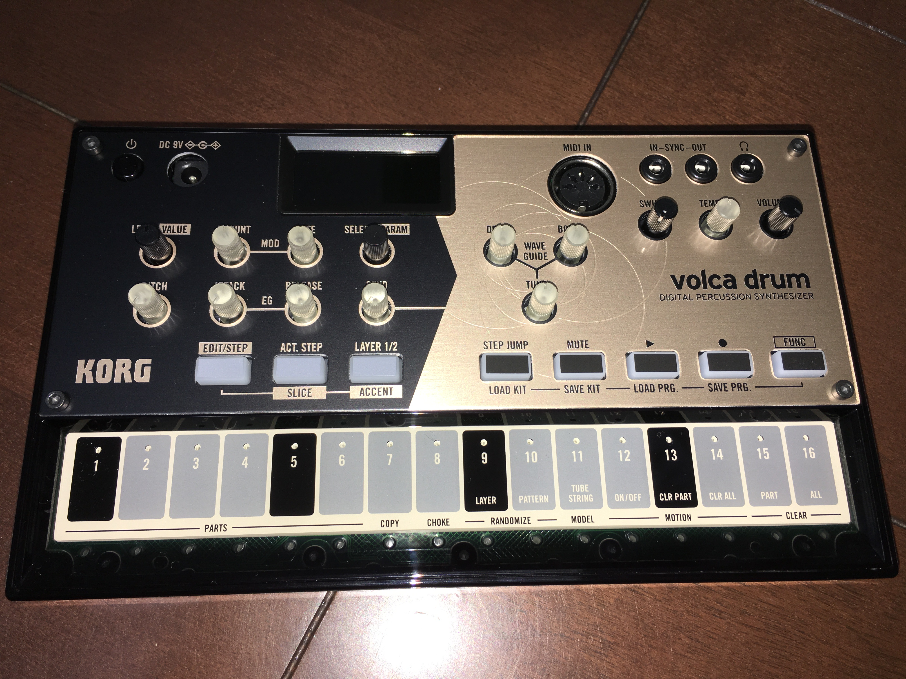
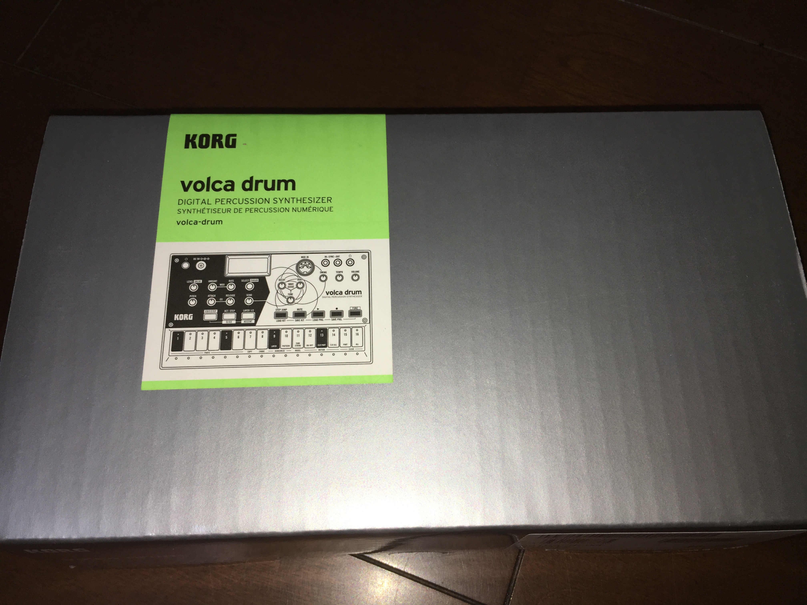
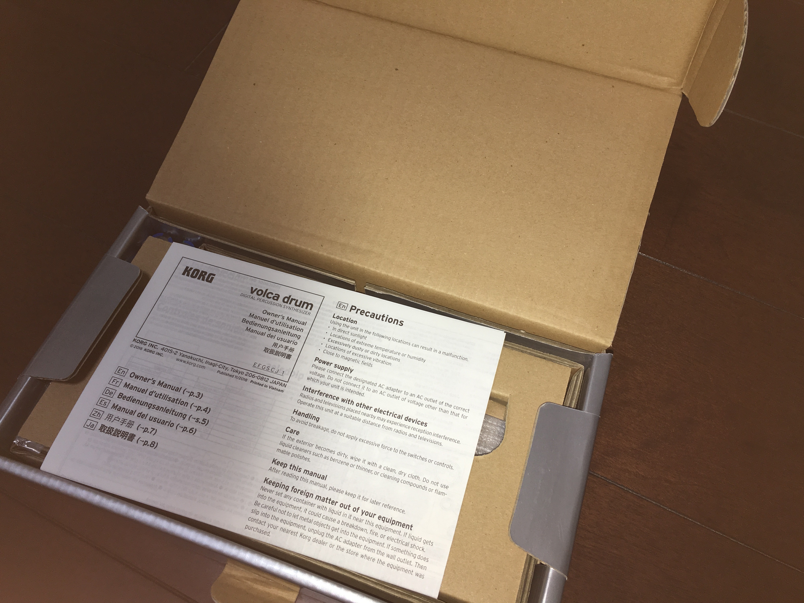
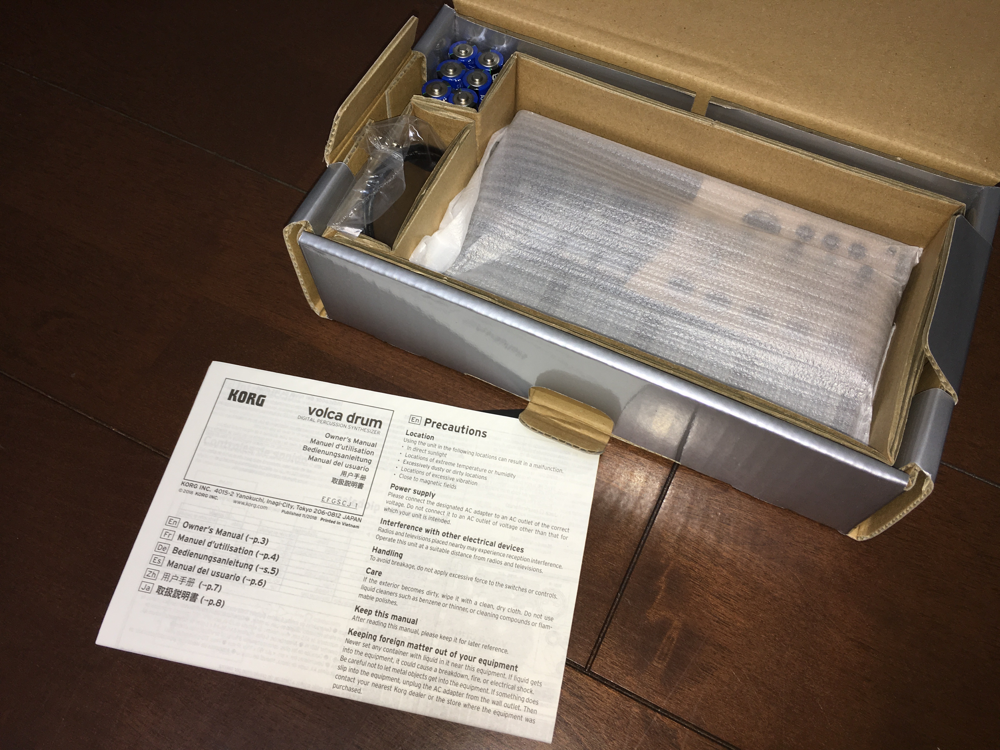

modularに引き続き、volca drumも買っちゃったい_(:3」∠)_
volcaとは、KORGの生み出したシンセサイザーのシリーズでして、個人的にも大好きなシリーズです。コンパクトな筐体にハイエンドモデル顔負けの要素をこれでもかと積み込んで、美味しいところをコンパクトな筐体に詰め込んだセミモジュラーシンセだったり、かと思えばキック音に特化しまくった超絶ニッチだけどスゴく使えるキックジェネレーターだったり、王道のポリフォニックなアナログシンセサイザーなどなどを生み出してきたシリーズです。
個人的にも今までにkeys、bass、kick、sampleなどなど購入してきましたが、今回新たにリズムマシン・パーカッションシンセサイザーであるvolca drumを購入しました！
以前に購入したセミモジュラーシンセであるvolca modularのレビューはこちらです。
volca drum（以下、drum）はKORGがデジタル・パーカッション・シンセサイザーと銘打っているとおり、デジタルのリズムマシンです。すでにリリースされているvolca beatsやvolca kickがアナログのリズムマシンであることを考えると、今までにない新機軸の機種であることがわかります。ちなみに、volca sampleも同様にデジタルですが、こちらはサンプラーなので基本的にプレイバックが主な利用用途で、音作りに関しては限界があります。要は元のサンプルから大いに逸脱した音は作れないわけです。
対して、drumではDSPによるアナログモデリングによって音を編集して、volcaシリーズでお馴染みのシーケンサーでリズムパターンを組み立てます。drumのDSPは、オシレーター波形にサイン波、のこぎり波、ノイズなどを採用しています。オシレーターから出力された音にいろんな変化を加えることで、本物の打楽器に近似した音からデジタル特有の独特な音まで、ドラムだけにはとどまらず、幅広いバリエーションのパーカッション・サウンドを生成できます。
volca drumは合計で6つのパートを保持しています。また、これらのパートはそれぞれ個別に2つのレイヤーを持っています。これらのパートはそれぞれ同じ仕様です。「同じ仕様」とは各パートが同じオシレーター、モジュレーター、EGを保持していることを指しています。つまり「ここはバス・ドラム、ここはシンバル・・・」といったルールや制限はないため、バスドラムやスネアドラムを抜いたパターンを構築したり、全パートでそれぞれ微妙に異なるシンバル音を生成したりすることも可能です。極端なことを言えば、全パートで同じ音を生成することも可能なわけです。まぁ、実用性があるかどうかは、とりあえず別にして。
なお、パターンは最大16個まで保存が可能です。
各パートはそれぞれ2レイヤーを保持しています。各レイヤーのパラメーターは個別でも同時でも編集が可能なので、2つのレイヤーに同じ音を重ねて厚みを持たせることができます。
エフェクト部は、物理モデリングをベースとしたウェーブガイド・レゾネーターを搭載しています。これは、太鼓の胴や長いパイプのような筒状の残響音を加えるチューブと、スネアの音っぽいメタリックな感じの弦の響きを加えるストリングスの2タイプが選択可能です。パネル中央部の3つのツマミによりDECAY（減衰量）、BODY（音のキャラクター）、TUNE（ピッチ）の設定が可能で、TUNEを小さな値にすればショートディレイにもなります。これらのツマミはモーションシーケンスの対象です。
シーケンサーは他のvolcaシリーズやリズムマシンでもおなじみな、16ステップがベースのシーケンサーです。16ステップを1小節としてパターンを組み立てていきます。その中でdrumには即興性と表現力に優れた機能がいくつかあります。
ACTIVE STEPは各パートにおいて再生したいステップを任意に設定できる機能です。各パートごとに設定できるので、全体のうち1パートだけリアルタイムに再生するステップを変えたいっていう場合にも利用可能です。
たとえばスネアドラムのロールは、シーケンサーが16ステップである場合これより細かいステップでビートを設定はできません。ところが、SLICE機能を利用することで、16ステップよりさらに細かいステップを設定でき、さらにSLICEするレベルはツマミで変更可能です。
アクセントです。これが設定されたステップは強拍になり、リズムのニュアンスを多彩に表現することが可能です。
複数パートのうち、発音を優先させたいパートを設定できるのがCHOKE機能です。チョークを有効にしたパートは同時には発音せず、パート番号の小さい1パートの発音が優先されます。要はサイドチェイン、あるいはダッキングのような感じです。
さて、いつもの如く開封の儀です。

相変わらず、ひと目見てそれとわかるKORGのガジェット特有のデザインであるパッケージがとても良いです。

こちらもいつもの如く開封してすぐ出てくるマニュアル類。

中の蓋を外すとdrum本体が出てきます。
本体です。黒とゴールドの彩色で、高級感のあるデザインです。あまりこの価格帯でのガジェットにはない色彩ですよね。
volca drum買いました。特有の出音がクセになりそうな面白いガジェットですね#volca#korg pic.twitter.com/D2VT1rgejD
— ysko (@unknown_strings) August 9, 2019
いかにもダンストラック的な4つ打ちです。drumのDSPが出力する音は、結構特徴的であることがわかりますね。
他も#volca #korg pic.twitter.com/eLEP0L5UON
— ysko (@unknown_strings) August 9, 2019
ドラムンベースのようなリズムパターン。スネアドラムにSLICE機能でロールを入れています。さらに「ぴょーん」という飛び道具的な音も組み込んでみました。
なお、このパターンではSwing機能の値をマイナス方向に設定しています。そうすることで、前のめりなノリになっていることがわかります。ちなみに、Swingをマイナス方向に設定するには、FUNCキーを押しながらSwingのツマミをいじることで、設定可能です。
音作りの底なし沼。馴染みな音も奇抜な音もなんでもござれな個性的リズムマシン！です。
volca beatsと異なり、各パートで自由に音作りできる分とっかかりにくい印象を受けますが、一度慣れてしまえば実際のドラム音に似た音もそうじゃない音もコレ1台でこなせる多彩な表現力を持ったリズムマシンです。
個人的には変に実際のドラム音に近似した音を作るより、DSPの自由度に物言わせた「こんな音もリズムパターンに組み込んじゃうぜー！」みたいな奇抜な音をどんどん作って行きたいです。AutechreとかPlaidっぽいトラックを作るには最適なガジェットだと思います。